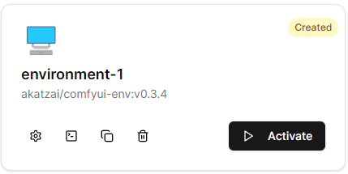
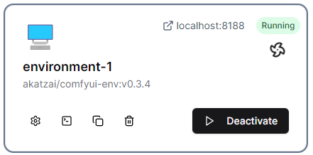
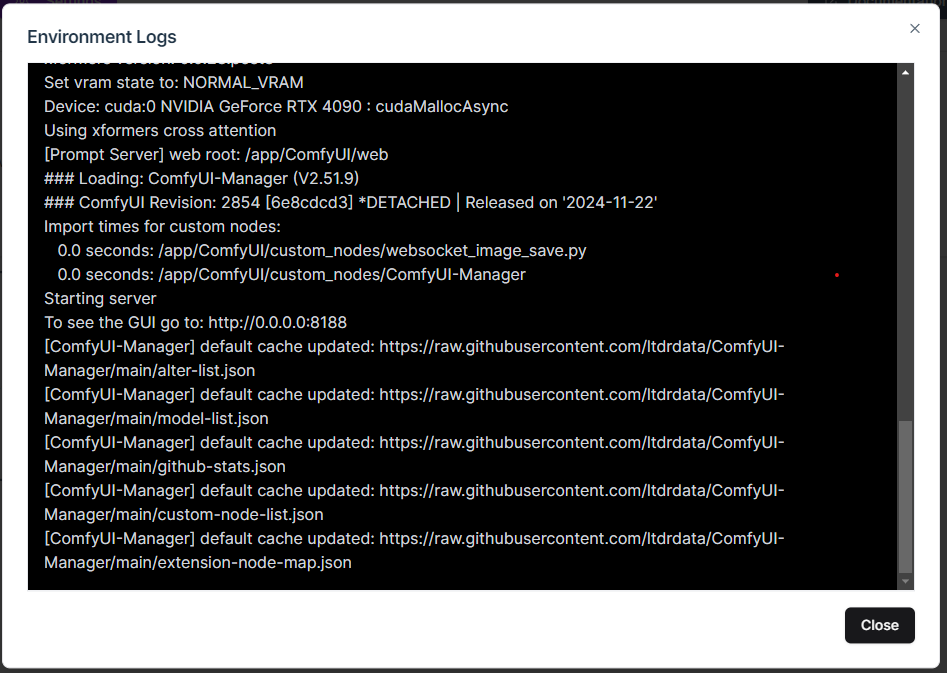
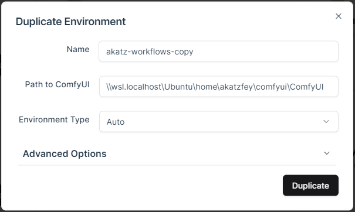
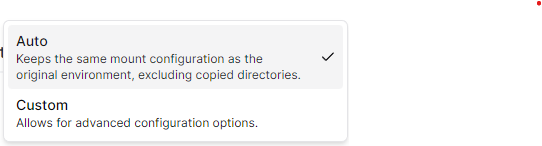
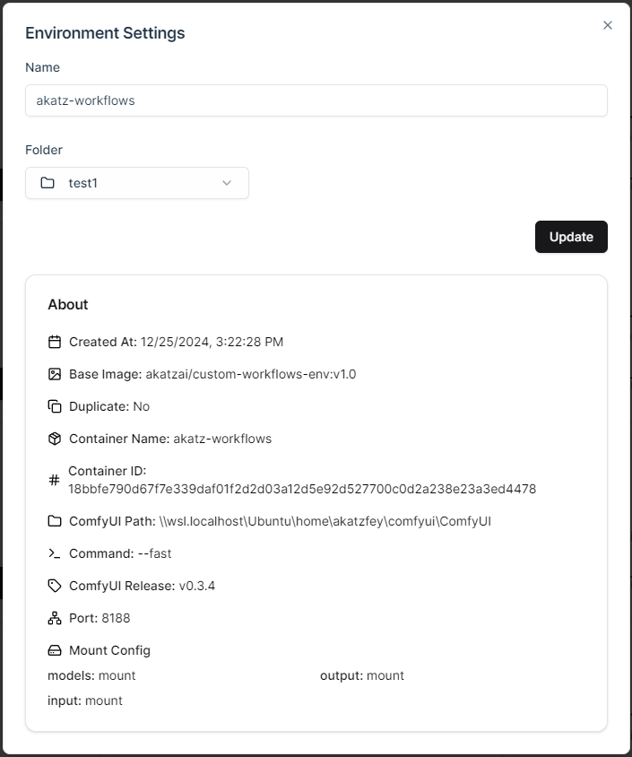
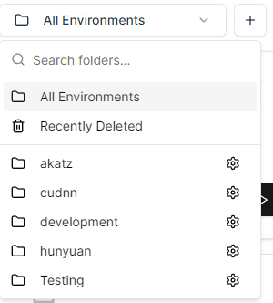
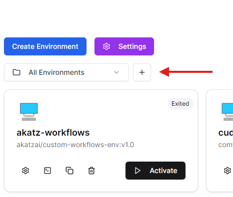
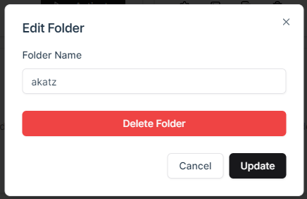
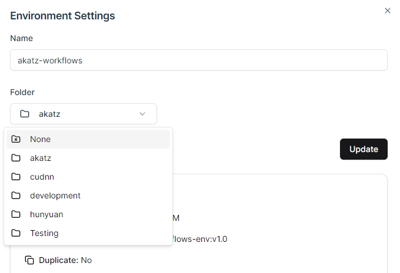

Working with Environments¶
Environment Cards¶

Each environment is displayed as a card, showing:
- Name
- Base image
- Status (e.g., Created, Running, Exited)
Actions¶
- Settings: Edit environment details.
- Logs: View the current state of the environment.
- Duplicate: Clone an existing environment.
- Delete: Permanently remove an environment.
- Activate: Start the environment (deactivates others unless multiple containers are allowed).
Activating Environments¶
-
Activate: Click the Activate button to run the environment.
- You will know an environment is active if it has a green Running status, and spinning fan icon.

- Access the server by clicking the link next to the Status indicator.
- Once an environment is running you will be able to monitor the internal ComfyUI logs by clicking on the “Logs” button, which open a dialog displaying the current state:

Duplicating an Environment¶
Demo
You can use the duplicate functionality to create a copy of an environment. Mounted directories are not included in this copy, only installed dependencies, copied data, and files already present in the environment will be saved to the duplicate.
-
Duplicate: Use the Duplicate button to create a copy of an environment. Adjust settings as needed during duplication.

-
Environment type by default is set to “Auto”, which keeps the same mount config as the original:

-
You can further adjust the duplicate environment in the Advanced Options tab, these options are the same as when creating a new environment.
IMPORTANT: you can only duplicate an environment that has been activated at least once.
Deleting an Environment¶
- Use the Delete button to remove an environment.
- If the environment is NOT already in the “Recently Deleted” folder, it will be moved there. If it already is in the “Recently Deleted” folder, it will be permanently deleted.
NOTE: Files and directories that are “mounted” from the host machine (such as models, workflows, etc.) will NOT be deleted when an environment is deleted. Only files native to the container or copied into the container will be deleted.
Environment Settings¶
Click on Settings in the environment card to:
- Rename the environment.
- Change the environment’s folder location.
- View detailed environment information (e.g., base image, mount points).

Organizing Environments with Folders¶
You can use folders to organize your environments. You can see which folder you are currently viewing via the dropdown in the top-left corner:

Default Folders¶
- All Environments:
- A default folder that will display all environments you currently have saved, regardless of which folders they are saved under.
- Recently Deleted:
- A folder which shows environments that were recently removed. If you delete an environment from this folder it will be permanently deleted from the machine.
- Up to 10 (limit configurable in Settings) environments can remain in this folder at a time. If an environment is deleted and added to “Recently Deleted” when it is already at max capacity, the oldest created environment in the folder will be permanently deleted.
Creating New Folders¶
- You can create new folders by clicking on the “Add Folder” button next to the folder dropdown menu:

- Folder names must be unique
- Folders will be added to the dropdown list in the order they were created
Editing and Deleting Folders¶
- You can change a folder’s name, or delete an empty folder by clicking on the “Settings” button right of a folder name in the dropdown menu.

- Click “Update” once you’ve made changes to save them.
- Click “Delete Folder” if you’d like to delete a folder, folders can only be deleted if they contain no environments (you can move or delete existing environments until the folder is empty).
Adding Environments to Folders¶
There are a couple of ways to add an environment to a folder:
- Create the environment inside of a specific folder
- Environments created with a folder selected will be added to that folder by default
- Environments created in a Default Folder (All Environments, Recently Deleted) will have the “None” folder assigned by default.
- Duplicate an environment inside of a specific folder:
- Duplicates will be added to the selected folder by default
- Duplicates in a Default Folder will have the “None” folder assigned.
- Manually set the environment’s folder via Environment Settings:

- You can manually specify which folder an environment should belong in with the Folder dropdown in settings. Click “Update” once selected to save the changes.